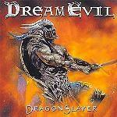

|
|
||
Dream Evil : DragonSlayer (2002) |
|

http://www.dreamevil.mu |
1. Chasing the Dragon 4:01 |
6.8/10 |
|
Dream Evil es una banda sueca que formó, allá por 1999, Fredrik Nordström, productor y dueño del estudio Fredman (donde han grabado entre otros Hammerfall) junto con el guitarrista griego Gus G. (antes en Mystic Prophecy y en Firewind). Dragonslayer es su álbum de debut, donde practican power metal melódico, con letras sobre héroes y dragones y claras influencias provenientes del metal de los 80. Un buen trabajo con la guitarra y una buena voz, la de Niklas Isfeldt, terminan de definir a esta banda. "Chasing the Dragon" es un buen tema, con coros melodiosos y espectaculares. "In Flames you Burn" es más potente, de ritmo más rápido y estribillo pegadizo. La tercera canción, "Save Us", tiene un aire más oscuro que las anteriores, y los coros son menos melodiosos, más contundentes. Tras "Kingdom of the Damned", un tema que no destaca demasiado, viene "The Prophecy", otro tema bastante predecible pero de ritmo vertiginoso. "The Chosen Ones" es un tema más original, con coros majestuosos y un cierto aire al glam de los 80. "Losing You" es una balada de la que podemos destacar el estribillo, y olvidar lo demás. "The 7th Day" es otro de los temas potentes del álbum, con frecuentes cambios de ritmo y guitarras contudentes. "Heavy Metal in the Night" es la típica canción-himno al heavy metal, y podría haber sido compuesta por cualquier banda de heavy de los 80. La décima pista, "H.M.J.", Heavy Metal Jesus, es otro tema estilo años 80, aunque más original que el anterior. "Hail to the King" recupera a los Dream Evil de la primera canción, con melodía y unos coros fabulosos. La "Outro" casi no vale la pena ni mencionarla, porque no son más que quince segundos donde se oye una orquesta afinando sus instrumentos. A modo de conclusión, diré que este disco tiene dos o tres canciones que estan junto a lo mejor del power metal actual, y otras nueve que, en general, no aportan demasiado. Si Dream Evil se decide a desarrollar un estilo propio, y aciertan con él, entonces es posible que su próximo trabajo sea fabuloso, pero éste no lo es. |
||
Rubén Béjar |
||